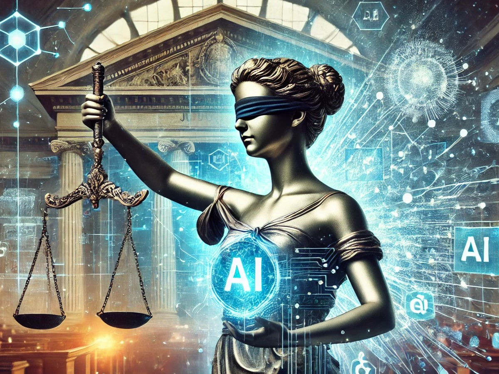

Resumo:
O professor Marlo trouxe a discussão sobre Decisões Algorítmicas e como os algoritmos em um mundo ideal seriam isentos em suas decisões, contudo como foi mostrado isso não se aplica na realidade, onde o uso indiscriminado de diversos algoritmos tendem a causar diversos problemas em toda a sociedade.
Inicio:
Inicialmente há uma breve explicação sobre a área que estuda a Computação e a Sociedade, e os impactos dessas ferramentas em toda a sociedade. Após isso surge uma questão muito importante, como os algoritmos tomam as suas decisões? Esse é um questionamento interessante uma vez que na maior parte das vezes não temos acesso aos códigos desses algoritmos já que a maioria deles são códigos proprietários e dessa forma surge a indagação, qual é a relação entre ética e algoritmos? Surgem então os seguintes tópicos.
- “Algoritmos são matemática, logo não podem ser racistas”
- “Algoritmos não são seres políticos, logo não faz sentido falar em ética algorítmica”
- “O problema não são os algoritmos, são (os dados, a sociedade, etc.)”
- “Isso não é preocupação minha, eu só faço o algoritmo, quem tem de pensar no impacto é quem usa”
- “Eu sou funcionário, eu faço o que me mandam”
Analisando esses tópicos podemos analisar diversos elementos interessantes, primeiramente embora os algoritmos sejam parte de uma matemática, eles são projetados por seres humanos e portanto carregam os seus vieses, logo um algoritmo pode sim ser racista, além disso a preocupação dos impactos desse algoritmo não cabe somente ao usuário, quem produz esse algoritmo também tem que ter uma visão macro de sua produção, a ética no uso e na produção dos algoritmos é de extrema importância e deve ser respeitada por todos.
Automação em Diversas Áreas
Além desses tópicos, diversas áreas atualmente estão aderindo ao uso de automações para melhorar a eficiência e a otimização de atividades contudo áreas sensíveis como o judiciário e saúde precisam de cuidado redobrado no uso desses algoritmos. Como dito anteriormente os algoritmos possuem vieses e isso é apresentado pelo professor Marlo de uma forma muito simples, um algoritmo para montagem de um sanduíche, há inúmeras formas de se montar um sanduíche, a forma como ele será montado, isto é, o conjunto de passos para se montar o sanduíche será decidido pelo criador do algoritmo, é nesse ponto que está o viés algoritmico. Logo após essa breve explicação o professor faz diversos questionamentos como:
- A quem interessa/ quem se beneficia com a resolução deste problema?
- Quem é atingido com o sistema desenvolvido? Como?
- Quem é afetado pelos erros do sistema? Como essas pessoas podem ser afetadas?
- Com qual propósito estamos desenvolvendo essa tecnologia?


Transparência nas IAs
Logo após para finalizar o professor entra na discussão sobre os usos de Inteligência Artificial que cresceram absurdamente nos últimos anos, primeiramente fica a indagação, qual o código para o treinamento dessas IAs? Quem detém esses códigos? Qual a base de dados utilizada para o treinamento e aperfeiçoamento dessas IAs? Elas possuem vieses que podem prejudicar a sociedade? Essas questões são muito importantes e possuem um papel fundamental para o entendimento de como a sociedade na era digital está sujeita a essas soluções.
Conclusão
A discussão desse tema se mostra bastante pertinente e a obtenção de um olhar macro para essas questões traz uma sensação de que, mesmo com todos os avanços tecnológicos nessas áreas nos últimos anos, o impacto social dessas tecnologias ainda é menosprezado, dando lugar a um ambiente inseguro e preocupante tanto no presente quanto no futuro.